暮らしと、ちょっといいもの。
実際のレビューをもとに、暮らしを少し良くするアイテムと知恵をお届けします。
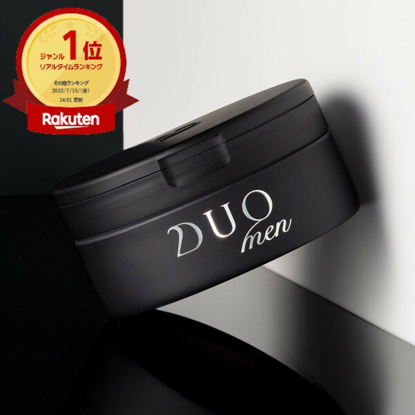
メンズ美容比較 洗顔料と目元ケアのおすすめ3選
毎日の洗顔からスペシャルケアまで、レビュー評価の高いメンズ美容アイテム3点を商品説明をもとに比較しました。忙しい方にも取り入れやすいアイテムを紹介します。
2026-09-26
-
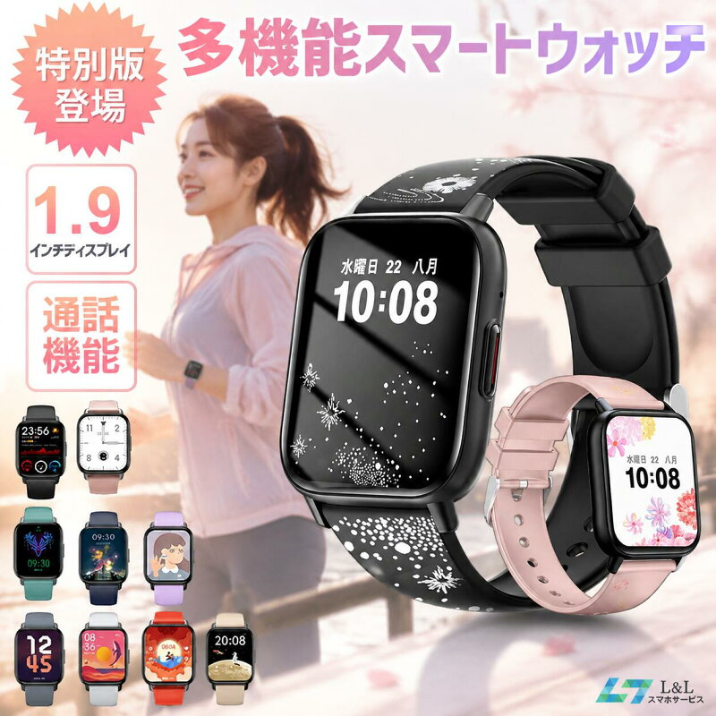
Huawei・中華ガジェット ・ PR中華ガジェット系スマートウォッチ3機種を徹底比較
Huawei・中華ガジェットジャンルで人気のスマートウォッチ3機種を比較。防水性能や通話機能、バンドの種類、レビュー件数など実際の商品データをもとに特徴を紹介します。
2026-09-26
-
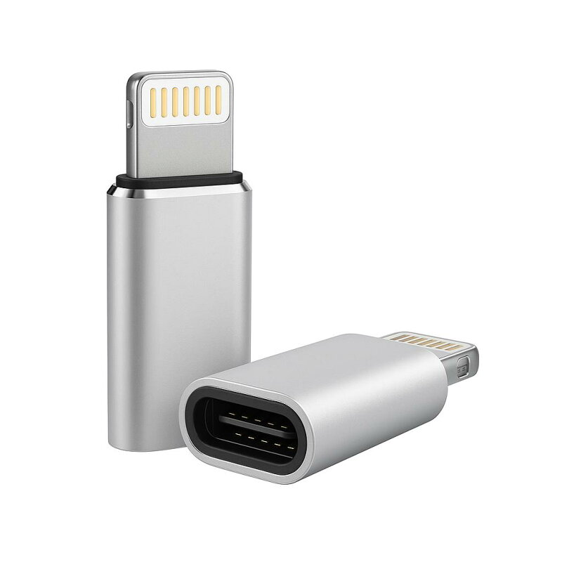
Apple最新情報 ・ PRiPhone周辺で使える変換アダプター＆チャーム比較3選
iPhoneまわりで役立つType-C to Lightning変換アダプターと、バッグやスマホに合わせやすいチャーム2種を、価格帯やレビュー評価をもとに比較紹介します。
2026-09-25
-
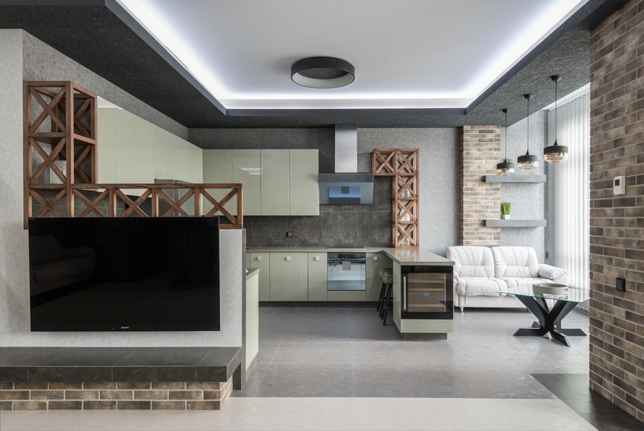
便利家電・最新家電一人暮らしの家電、最初に必要なものと後回しでいいもの
一人暮らしを始める際に本当に必要な家電と、生活してから買い足しても間に合う家電を、実際によく挙げられる声をもとに整理して紹介します。
2026-09-25
-
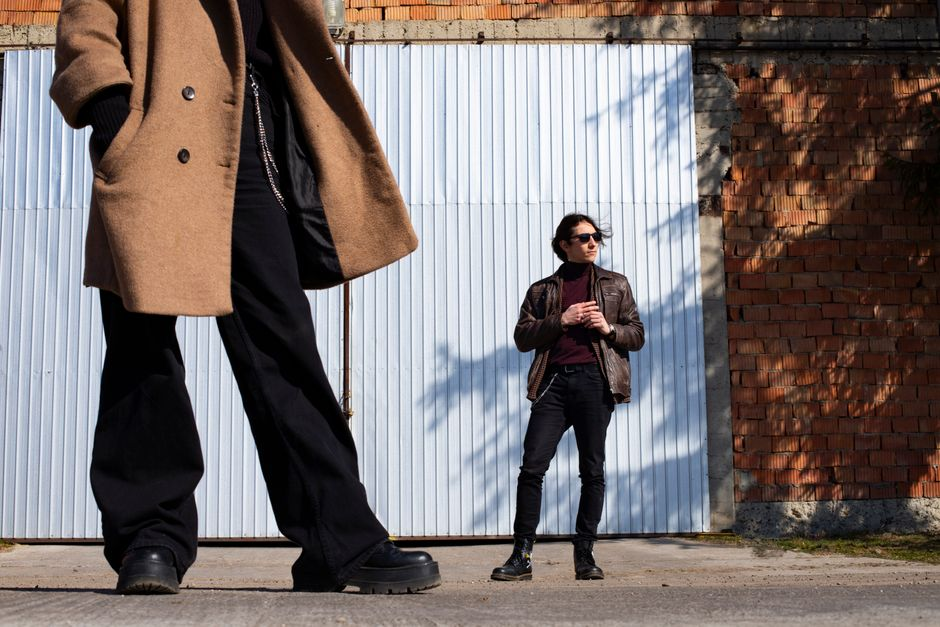
メンズファッション体型カバーに役立つメンズ服の選び方|縦ラインと色使いのコツ
体型が気になる方向けに、収縮色・ゆとり・縦ラインという3つの基準や、ニットの種類、パンツのシルエット選びなど、服選びで意識したいポイントを解説します。
2026-09-24
-
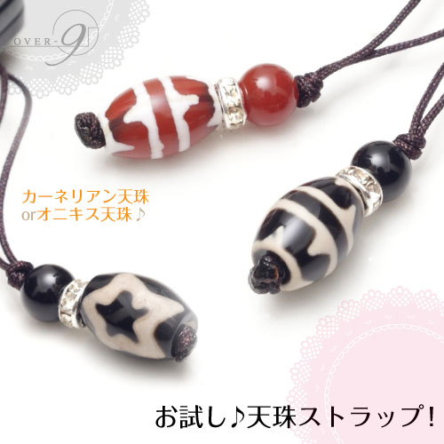
ガジェット ・ PRスマホアクセサリー比較3選 天珠ストラップ&グリップも紹介
スマホストラップやスマホグリップを検討中の方に向けて、天珠を使ったお守り系ストラップ、写真で作れるオリジナルグリップ、落下防止のショルダーストラップの3点を、価格やレビュー評価をもとに比較紹介します。
2026-09-24
-
生活雑貨
待機電力を減らす方法|電気代を抑える具体的なコツ
待機電力は家庭の消費電力量の約5%を占めるとされています。待機電力が大きい家電の特徴や、節電タップの活用など、無理なく電気代を抑えるための具体的な工夫を紹介します。
2026-09-23
-
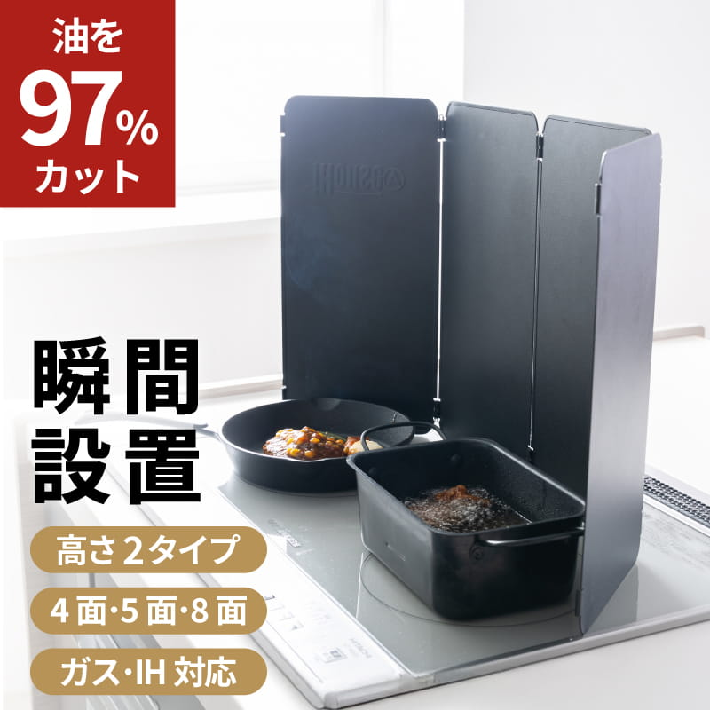
キッチン ・ PRコンロ周りの油はねと冷凍ご飯を解決するキッチン用品3選
コンロ周りの油はね対策と冷凍ご飯の保存を見直したい方向けに、コンロカバー・揚げ物鍋・冷凍ごはん容器の3点をレビュー評価や商品説明をもとに比較紹介します。
2026-09-23
-
メンズ美容
メンズ化粧水の選び方 脂性肌・乾燥肌タイプ別ガイド
男性の肌は皮脂が多く水分が少ないため、化粧水選びは肌質の見極めが重要です。脂性肌・乾燥肌それぞれに合う成分やテクスチャー、正しいつけ方まで解説します。
2026-09-22
-
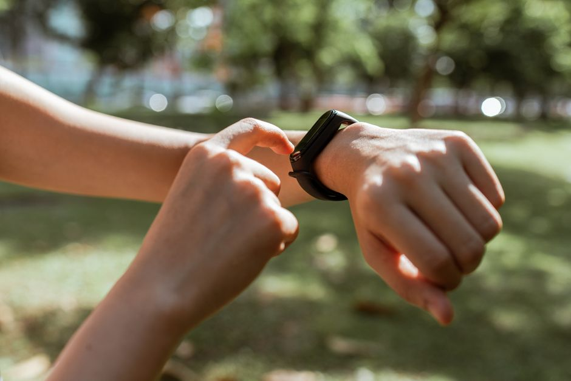
Huawei・中華ガジェットHUAWEI WATCH GT 6でできることと使う前の注意点
HUAWEIの最新スマートウォッチWATCH GT 6を例に、健康管理やスポーツ機能で何ができるのか、日本で使う際に知っておきたい注意点を検索で調べた情報をもとに整理しました。
2026-09-22
-
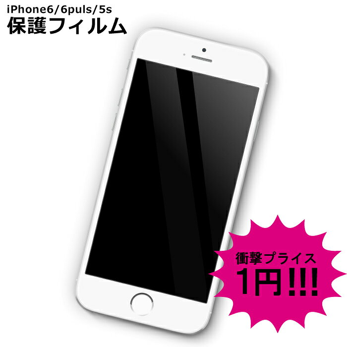
Apple最新情報 ・ PRiPhoneアクセサリー比較｜保護フィルム・変換アダプター・MagSafeリング
iPhone向けの保護フィルム、Type-CtoLightning変換アダプター、MagSafe対応メタルリングを実際の商品データをもとに比較紹介します。
2026-09-21
-
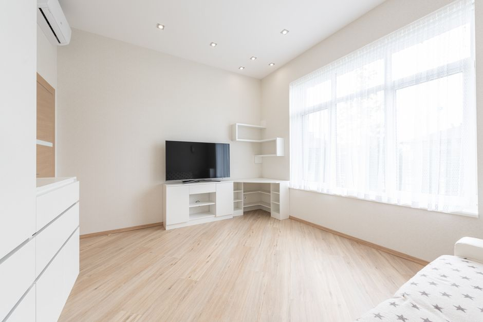
便利家電・最新家電最新の時短家電で家事時間はどれだけ減るのか徹底検証
食洗機・ロボット掃除機・洗濯乾燥機といった時短家電を使うと、家事時間は実際どれくらい減るのでしょうか。各種調査やメディアの試算をもとに、食器洗い・掃除・洗濯にかかる時間の変化と、時間以外に得られる効果について整理して紹介します。
2026-09-21
-
メンズファッション
革靴・スニーカーの手入れ方法|長持ちさせる基本ケア
革靴とスニーカーを長持ちさせるお手入れ方法を紹介します。ブラッシングの頻度やクリームケアのタイミング、素材別の洗い方、保管時の注意点まで、基本的なケアのポイントをまとめました。
2026-09-20
-
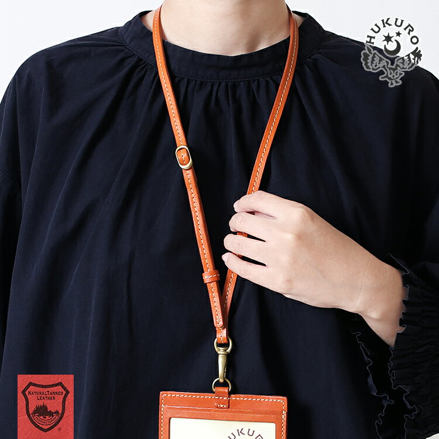
ガジェット ・ PRスマホストラップおすすめ3選 本革から落下防止まで比較
本革のネックストラップやチョイガケタイプ、手頃なショルダーストラップまで、スマホの落下防止・持ち運びに役立つストラップ3点をレビュー評価とあわせて紹介します。
2026-09-20
-
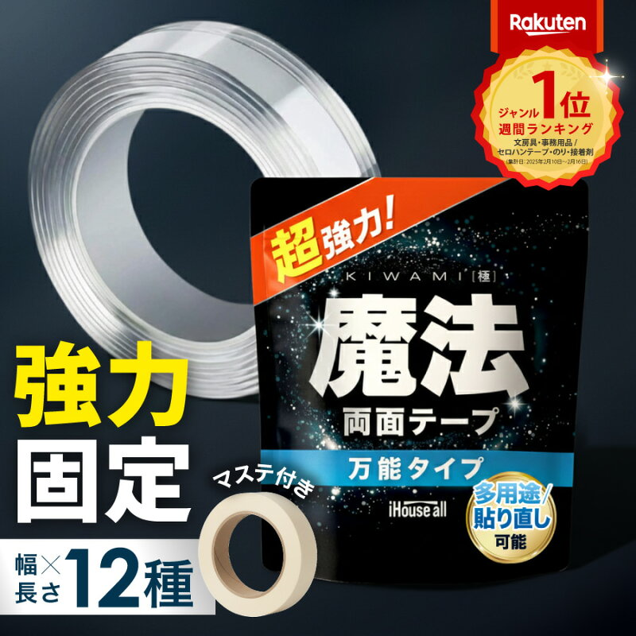
生活雑貨 ・ PR生活雑貨の便利アイテム比較 テープ・パスケース・換気扇フィルター
収納や外出、掃除の手間を減らしたい方向けに、両面テープ・ICカード用パスケース・換気扇フィルターの3つの生活雑貨をレビュー件数や特徴とあわせて比較紹介します。
2026-09-19
-
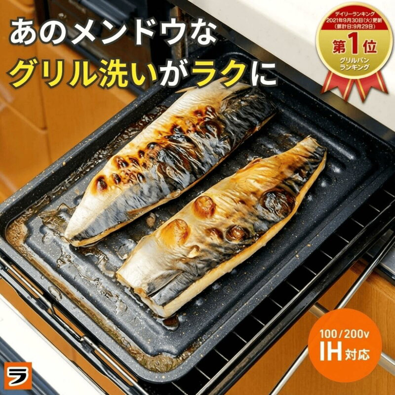
キッチン ・ PR焼き魚トレーとキッチンマット比較｜キッチン用品おすすめ3選
グリル専用の焼き魚トレー、拭ける透明キッチンマット、卵焼き用フライパンを実際の商品データをもとに比較。レビュー件数や素材の特徴から、自分の悩みに合うキッチンアイテムを探すヒントを紹介します。
2026-09-19
-
 メンズ美容 ・ PR
メンズ美容 ・ PR
メンズ美容比較 乳液・メンズメイク・スキンケアセット3選
メンズ美容におすすめの乳液、メイクアップセット、ギフト向けスキンケアセットの3商品を、価格やレビュー評価などの実データをもとに比較しながら紹介します。
2026-09-18
-
メンズファッション
シワになりにくい服の選び方と収納・持ち運び術
ジャケットやシャツがすぐシワになって困っていませんか。素材の特徴から選び方、クローゼットでの収納、出張時のスーツケースへの詰め方まで、シワを防ぐための考え方をわかりやすく紹介します。
2026-09-18
-
ガジェット
ワイヤレスイヤホンを長持ちさせるお手入れ方法まとめ
ワイヤレスイヤホンを長く快適に使うための、本体・イヤーピースの汚れの落とし方、充電端子の掃除、防水規格の見方、バッテリーをいたわる保管のコツをわかりやすく解説します。
2026-09-17
-
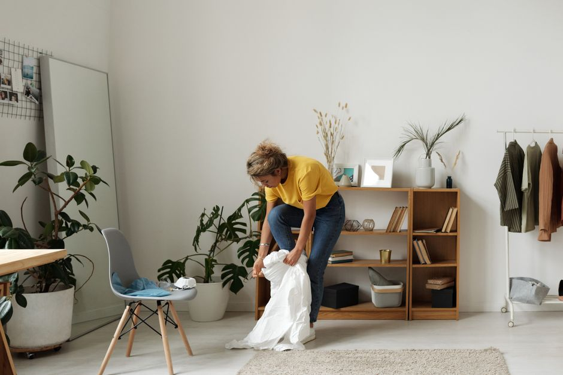
生活雑貨部屋の湿気・カビ対策の基本｜換気と除湿のコツ
部屋にカビが発生しやすい湿度・温度の条件と、換気や家具配置、浴室ケアなど、日常でできる湿気・カビ対策の基本を分かりやすく解説します。
2026-09-17
-
 キッチン
キッチン
一人暮らしの自炊を時短にするキッチン収納の配置のコツ
一人暮らしの自炊にかかる時間を減らすため、使用頻度や作業動線に合わせたキッチン収納の考え方を紹介します。ゴールデンゾーンの活用や立てる収納、フック収納など、すぐに試せる工夫をまとめました。
2026-09-16
-
 メンズ美容 ・ PR
メンズ美容 ・ PR
メンズ美容おすすめアイテム比較 化粧水・皮脂対策・香水3選
メンズ美容に関心がある方向けに、化粧水・テカリ防止クリーム・フレグランスの3アイテムを、価格とレビュー評価をもとに比較紹介します。
2026-09-16
-
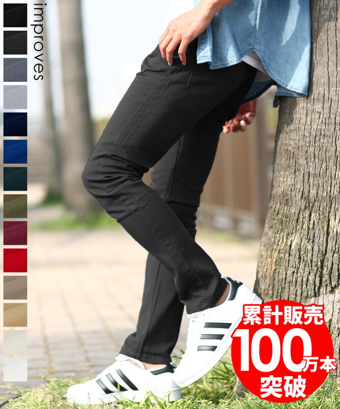
メンズファッション ・ PRメンズパンツ&Tシャツ比較!人気アイテム3選
メンズファッションのおすすめアイテムを実際のレビュー評価をもとに比較。スキニーパンツやTシャツなど、コーデに取り入れやすい3アイテムの特徴を紹介します。
2026-09-15
-
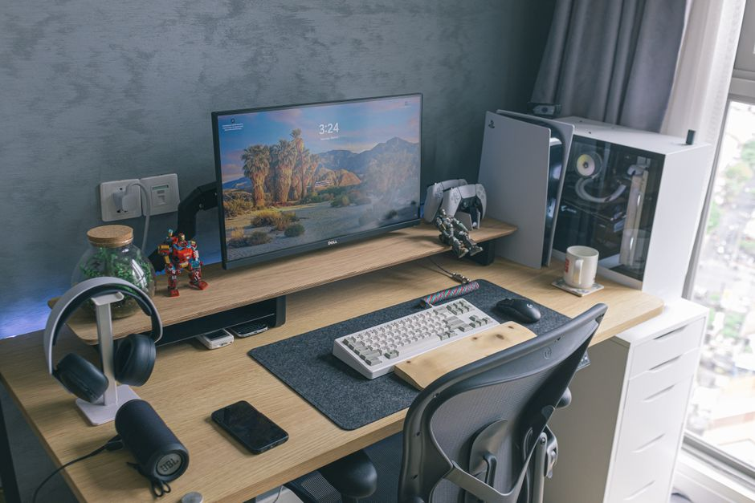
ガジェットスマホの充電を長持ちさせる節約術と正しい充電のコツ
スマホのバッテリーを長持ちさせるための充電習慣や温度管理、充電上限設定、低電力モードの活用法を、検索で確認できた情報をもとにわかりやすく紹介します。
2026-09-15
-
生活雑貨
一人暮らしの部屋干しで生乾き臭を防ぐ干し方のコツ
一人暮らしの部屋干しで気になる生乾き臭。原因となるモラクセラ菌の性質や、干し方・洗い方・乾燥時間の工夫による対策を根拠とともに紹介します。
2026-09-14
-
 キッチン ・ PR
キッチン ・ PR
排気口カバーや丸いまな板などキッチン便利グッズ比較
山崎実業の伸縮排気口カバー、食パン用保存袋、抗菌まな板など、レビュー評価の高いキッチンアイテムを比較して紹介します。排気口の汚れ対策やパンの保存、衛生的なまな板選びの参考にどうぞ。
2026-09-14
-
 メンズ美容
メンズ美容
清潔感を出す髭・眉の整え方 セルフケアの基本ステップ
髭と眉のセルフケアで清潔感を高める方法を紹介します。蒸しタオルやシェービングジェルの使い方、眉を整える道具と手順、やりすぎを防ぐ注意点をまとめました。
2026-09-13
-
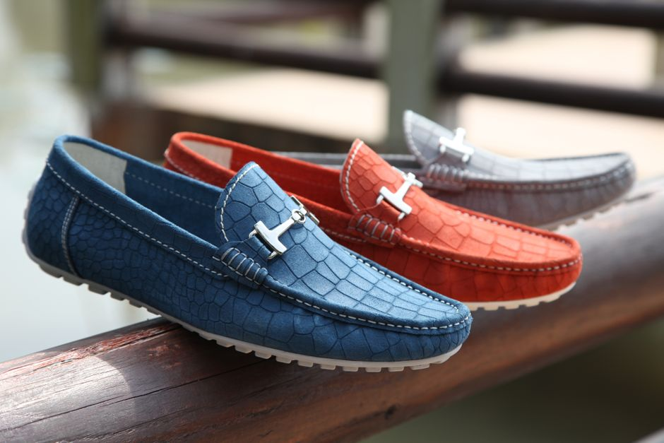
メンズファッション清潔感のあるメンズコーデの基本ルールと整え方
清潔感のある服装は「足す」よりも「消す」ことが基本です。色・素材選び、サイズ感、髪型のメンテナンスなど、今日から意識できる基本ルールを解説します。
2026-09-13
-
 ガジェット
ガジェット
モバイルバッテリーの選び方と正しい使い方【2026年版】
モバイルバッテリー選びで確認したい容量やPSEマークのポイント、2026年4月からの飛行機持ち込みルール、発火を防ぐ使い方や処分方法まで、根拠のある情報だけをまとめました。
2026-09-12
-
 生活雑貨 ・ PR
生活雑貨 ・ PR
生活雑貨の便利アイテム比較 旅行ポーチ&バッテリー3選
旅行や普段使いに役立つトラベルポーチとモバイルバッテリーを、価格・レビュー評価・商品説明の実データをもとに比較して紹介します。収納力や仕様の違いを確認してみてください。
2026-09-12